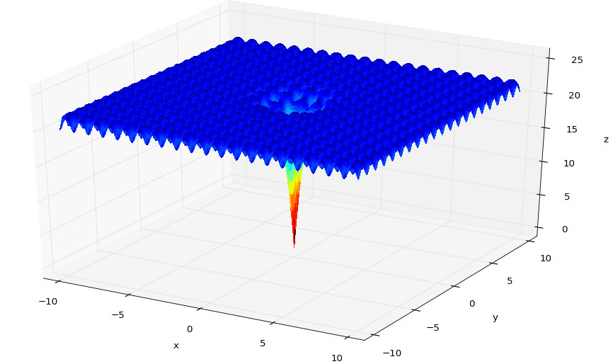
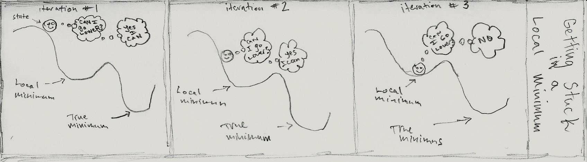

Introduction
Optimization, in general, is the process of finding the "best" or "worst" values of a function. The notion of the 'best' or 'worst' value of a function varies depending on the function we are examining. The function that we try to optimize is often refered to as the 'objective' function.
In the context of this writup, the objective functions we will be dealing with have type $\Re^2 \to \Re$. That is, they take two real numbers as arguments, and return one real number as their result. In calculus 3 paralance, functions of this type define a scalar field. They associate a real number to every point in space and can be visualized as a surface.
optimizing a function $f:\Re^2 \to \Re$ requires us to define what we mean when we talk about the 'best' or 'worst' values of $f$.
Definitions
Relative Extrema: forall $(x,y)$ in an open disk containing $(x_0,y_0)$- If $f(x,y) \geq f(x_0,y_0)$, then $f$ has a relative minimum at $(x_0,y_0)$
- If $f(x,y) \leq f(x_0,y_0)$, then $f$ has a relative maximum at $(x_0,y_0)$
- If $\forall (x,y) \in D, f(x,y) \geq f(x_0,y_0)$, then $f$ has a relative minimum at $(x_0,y_0)$
- If $\forall (x,y) \in D, f(x,y) \leq f(x_0,y_0)$, then $f$ has a relative maximum at $(x_0,y_0)$
Clarification of Terms
Note: For the rest of this writeup we assume the following:- all objective functions are of the form: $f:\Re^2 \to \Re$
- when we talk about optimizing $f$ we are refering to the specific case of finding the absolute minimum of $f$ accross some subset of the domain $\Re^2$
todo: what is an algorithm (state, iteration). the state of an algorithm at a particular iteration vs. the state of some pysical system at a paricular time
Gradient Descent
One property of the gradient of a function $f$ is as follows: the maximum descrease of $f$ is given by $-\nabla f(x,y)$. Given this property, the algorithm for gradient descent follows naturally.
$\mathbf{x}_{n+1} = \mathbf{x}_{n} - \gamma_{n}\nabla f(\mathbf{x}_n), n \geq 0$
This basically says: "given your current point, find a point that is lower than it. repeat until you can't go any lower." The $\gamma_{n}$ term is there to scale the gradient vector. it allows the algorithm to cover more ground per iteration. In python, the core part of the algorithm is as follows:
# one iteration of gradient descent
def Next(self, step):
# evaluate the gradinant at the current point
gradAtPoint = self.atPoint(self.currentIterValue)
# the new current point becomes the old current point
# minus the gradient (at the point) times some scale factor
self.currentIterValue = self.currentIterValue - (step * gradAtPoint)
return self.currentIterValue
Gradient descent can be classified as a greedy algorithm. Given the algorithm's current state (a point $(x,y)$ in space), it only transitions to points that are lower in space. this tactic, however, leads to issues when dealing with a function like the following:
Notice how many local extrema this function contains. If we try to run gradient descent on this function, any initial point we pick that is not in a small neighborhood around the origin will settle into one of the blue valleys. the algorithm tends to get 'stuck' in local minima.
Simulated Annealing
Simulated annealing compensates for the problems of gradient descent by allowing its algorithm to transition to new states based on some probability. In fact, the probabilistic components of this algorithm allow it to transition
in order to implement a simulated annealing algorithm, we need the following compontents:- a system and its possible states.
- the energy of a state.
- the temperature of the system.
- a way to describe how the system cools down.
- a way to describe how the system transisitons from one state to another.
the algorithm proceeds as follows:
(1) pick an initial state, and an initial tempurature
(2a) initialize variable to hold current state, set it with initial state
(2b) initialize variable to hold current tempurature, set it with initial temperature(3) iterateit is generally left up to the user to specify the maximum number of iterations of the algorithm.
(4) pick a neighbor of the current state- the current state
- the temperature of the system
- a value drawn from some probability distribution
(5) decide whether to:
the keep the current state, or
make the neighbor state from step (4) the new current state.- the enegy of the current state
- the enegy of the new state
- the current temperature of the system
- some value drawn from a uniform probability distribution between 0 and 1
We define a function $Acceptance(e,e',T)$. $e$ and $e'$ represent the energies of the current state $s$ and the new prospect state $s'$. in the context of the optimization problems we are concerned with
$Acceptance(e,e',T) = Acceptance(f(x_{current}, y_{current}), f(x_{neighbor}, y_{neighbor}),T)$
This function returns the probability of transitioning from the current state to the prospective new state selected by step (4). The most important part of the algorithm occures here. If the neighboring state is better (e.g. when it is applied to $f$, it produces a value that is 'less than', 'more minimum' than the current state), the probability of transitioning to the new state is 1 (100%). If the neighbor is worse than the current state, the function produces a probability that is proportional to the current temperature. As the temperature approaches zero, the probability of transitioning to a worse state approaches zero. This amounts to saying that when the system is 'hot' the probability of transitioning to a new, non optimal state is relatively higher than it would be in a 'cool' system. Recall from previous sections that the gradient descent algorithm only chose neighboring states that were more optimal. In contrast, simulated annealing might choose a new, non optimal state that will allow it (in subsequent iterations) to find a more optimal state. In intuitive terms, the algorithm is allowed to 'jump' out of a valley into a possibly deeper, more optimal valley. The intensity with which it 'jumps' is proportional to the temperature.
(5) set a new tempurature. goto (3)- the initial temperature
- the current iteration number
In our implementation we set the new temperature by multiplying the inverse of the natural logarithm of the current iteration number by the initial temperature. this serves to model the 'cooling' of the system as a function of time (the iteration number). As time increases, the temperature of the system decreases.
Simulated Annealing - Python
interpreting simulated annealing in the context of optimizing $f:\Re^2 \to \Re$ the system and its its possible states. here the 'system' is just the domain of $f$. the 'states' of the system are just elements of the domain (e.g. tuples of real numbers). the energy of a state. the energy function $E$ is the objective function $f$. the energy of a a state is its value when applyed to $E$. $e_0 = E(s_0) = f(x_0,y_0)$ the temperature of the system and how it cools down. the temperature of picking an initial temperature describing how the system cools